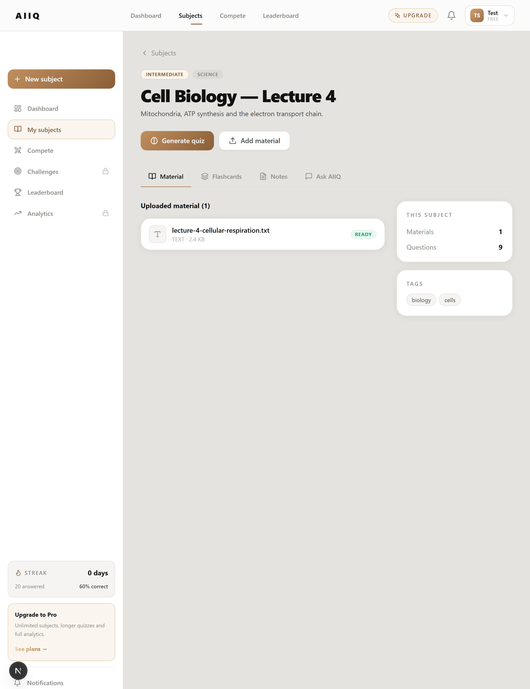
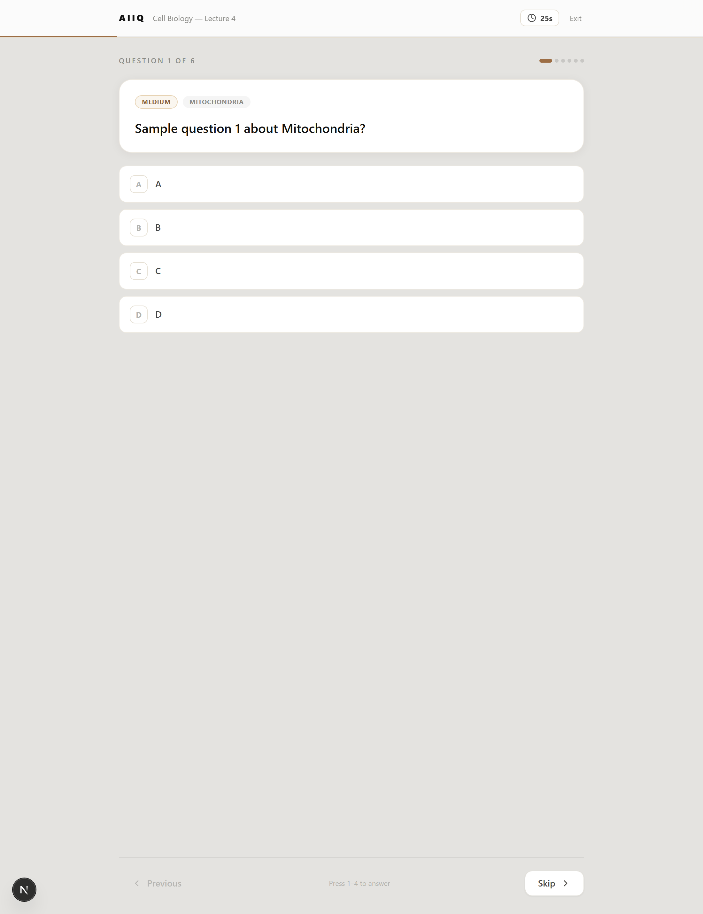
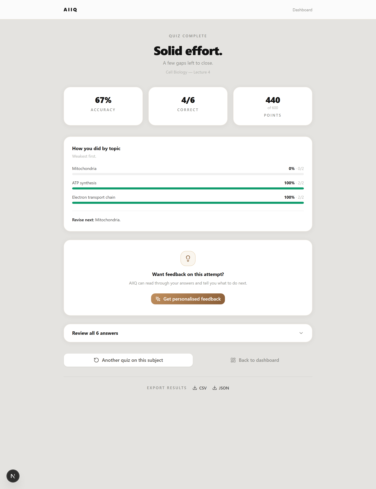
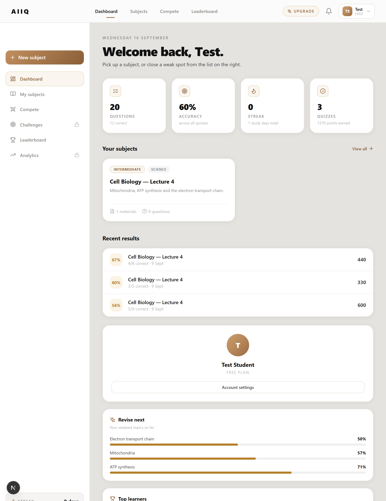

AIIQ converts a student's own lecture notes, textbooks and slides into quizzes, flashcards, study notes and a cited Q&A assistant — then measures mastery topic by topic to direct revision where it is actually needed.
AIIQ is a full-stack learning platform built around a single constraint: every item it generates must be answerable from the material the student uploaded — never from general knowledge.
A document is parsed to text, sent to a large language model under a strict grounding contract, and returned as structured JSON. From one upload the system produces four distinct study artefacts.
Every attempt is recorded and analysed, so the platform closes the loop from source material → assessment → measured weakness → targeted revision.




MCQ, true/false, fill-in-the-blank and short answer, from Easy to Expert.
Term/definition cards with shuffle and know-or-review tracking.
Overview, key points, concept map and study tips per subject.
Streaming Q&A that answers only from uploads and cites the source line.
Per-question countdown, keyboard answering, resumes after refresh.
Post-attempt feedback naming weak topics and the next actions.
Accuracy per topic plus a 14-day activity history.
Real-time multiplayer over WebSockets with ELO and leaderboards.
Full attempt data downloadable as CSV or JSON.
score = 100 × (0.5 + 0.5 × tremaining / ttotal) × d
Time-weighted scoring. Difficulty multiplier d = 1.0 Easy · 1.5 Medium · 2.0 Hard · 3.0 Expert.
Speed is rewarded but accuracy dominates — a wrong answer scores zero regardless of time.
Method. A single 377-word cellular-respiration lecture was uploaded as the only source. Every artefact the system produced was checked against that text, and the analytics layer was exercised with attempt data carrying known expected values.
A · Generation from one upload
B · Grounding fidelity
C · Measurement accuracy
D · Adaptive feedback
Activate the item-response-theory field already modelled in the schema to tune question difficulty per learner.
Schedule flashcard review intervals from per-card recall history.
Move live-room state from memory to Redis so realtime runs multi-instance.
Full multi-player load testing, with ELO driven by live match outcomes.
Cohort dashboards so tutors can see aggregate topic weakness across a class.